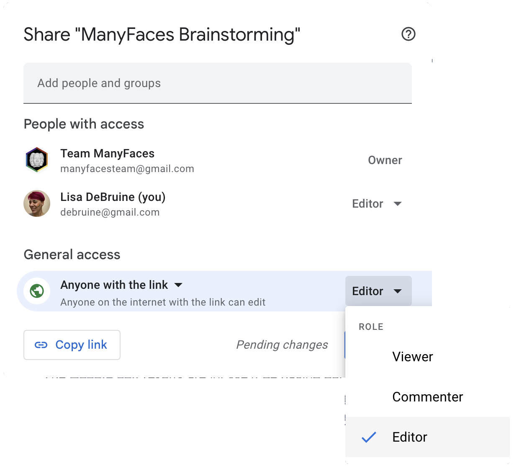

6 Reclutamiento de miembros
Mi participación en el Acelerador de la Ciencia Psicológica (Psychological Science Accelerator) comenzó en 2017 con un tuit de Chris Chartier. Y 5 años después, ManyFaces comenzó con otro.


Twitter u otros medios sociales son una gran manera de medir el interés en iniciar un equipos de ciencia colaborativa. Si obtienes mucho interés, tienes que estar preparado/a para empezar a organizarte rápidamente para mantener ese impulso.
6.1 Registrar el interés
Puedes crear un rápido formulario de Google para registrar el interés en el grupo. De este modo, puedes hacer una lista de todas las personas interesadas para poder contactarlas más adelante si no tienes tiempo de empezar de inmediato. También es una forma de centralizar el reclutamiento para que no tengas que estar pendiente de quién está interesado/as en los hilos de Twitter y los correos electrónicos y las publicaciones de Facebook…
Haz que el formulario de inscripción sea corto pero con la información necesaria:
- Nombre
- Correo electrónico
- Ubicación/Institución
- Texto libre para comentarios
También puedes hacer algunas preguntas específicas. Por ejemplo, en el formulario de interés de ManyFaces se preguntaba
¿Prefiere hablar por:
- Chat en vivo (por ejemplo, Zoom)
- Chat de texto asíncrono (por ejemplo, Slack/equipos/doc de Google compartido)
¿Qué te interesaría construir con un consorcio?
- Bases de datos de estímulos
- Nuevas colecciones de estímulos
- Nuevos estímulos o protocolos de estudio
- Colaborar en la recogida de datos
- Otros…
6.2 Documento de lluvia de ideas
Algo que funcionó muy bien para ManyFaces y el Code Check Club fue iniciar un documento de lluvia de ideas. Esta es una mejor manera de recoger y organizar las ideas que los mensajes de Twitter o del foro.
Los Google Docs son un lugar ideal para empezar un documento de lluvia de ideas. Sólo tienes que crear un documento y asegurarte de actualizar la configuración de Compartir para que cualquier persona pueda editar (o al menos comentar).

6.2.1 Estructura
Yo estructuraría el documento de lluvia de ideas con encabezados (en realidad, utiliza los estilos de encabezado para que puedas tener un esquema navegable) así
- Propósito: explicar el propósito del documento y cómo utilizarlo Anuncios: reserva un espacio en la parte superior para hacer anuncios o añadir tareas Valores fundamentales: ¿cuáles son los valores que unen a este grupo? Contribuidores/as: preséntate, qué aportas al grupo y qué esperas obtener de él
- Recursos**: ¿qué pueden aportar los/as miembros potenciales en términos de tiempo, experiencia, equipo o materiales?
- Preguntas/objetivos: ¿cuáles son las preguntas que abordará el grupo o los objetivos generales? Ideas: enumera todas tus ideas sobre lo que podría hacer el grupo; ninguna idea es demasiado grande/pequeña en esta fase
- Desafíos**: ¿qué obstáculos ve la gente para poner en marcha este grupo?
- Organización**: enumera lo que hay que hacer para poner en marcha el grupo (el resto de esta guía debería ayudar a ello)
6.2.2 Valores fundamentales
Una lista de valores fundamentales puede ayudar a garantizar que las personas que se unan al grupo tengan objetivos y valores alineados. Puedes empezar utilizando los ejemplos que aparecen a continuación y pedir al grupo que te ayude a concretarlos.
Valores fundamentales de ManyFaces
- Ética
- Protección de datos personales
- Evitar y denunciar el uso inapropiado de la IA/reconocimiento facial
- Diversidad e inclusión
- Diversidad de región, etapa profesional, disciplina, metodología, género, nacionalidad, etc.
- No dejar que “los ricos se hagan más ricos”
- Los laboratorios con más recursos tienen la responsabilidad de ayudar a los laboratorios e investigadores/as individuales con menos recursos.
- Transparencia
- Los recursos y los resultados se comparten tan abiertamente como la ética lo permite.
- Aunque no todos/as los/as miembros pueden participar en todas las decisiones, el proceso de toma de decisiones debe estar disponible para todas las personas.
Principios de ManyBabies
- Transparencia: Todas las decisiones en un proyecto de MB, desde el diseño hasta la publicación, son tan transparentes como sea posible Gestión colectiva: Cuando es posible y factible, las decisiones se toman de forma conjunta y transparente Inclusividad y diversidad: MB fomenta explícitamente los esfuerzos para aumentar la diversidad. Esto incluye solicitudes activas de financiamiento para ayudar a los laboratorios de comunidades poco representadas a participar, esfuerzos de divulgación y talleres de planificación
- Investigación ética: Los proyectos de MB están comprometidos con las mejores prácticas y los altos estándares éticos
- Respeto: Todos aceptan un código de conducta general que garantiza interacciones respetuosas
Principios básicos de la PSA
- Diversidad e inclusión
- Autoridad descentralizada
- Transparencia
- Rigor
- Apertura a la crítica
Consulte el sitio web de la PSA para obtener más detalles.
6.3 Inicio de la organización
Si las inscripciones y las contribuciones al documento de lluvia de ideas son escasas, no te preocupes. Puede que no sea el momento adecuado para crear este grupo. Organizar un equipo de ciencia colaborativa es demasiado trabajo para una sola persona, así que asegúrate de tener un número importante de miembros entusiastas y un grupo central dedicado.
Si muchas personas registran su interés en crear un grupo, muchas de ellas contribuyen al documento de lluvia de ideas, y hay un núcleo de personas con tiempo, entusiasmo e ideas para ayudar ahora, es el momento de empezar a organizarlo. El siguiente paso es establecer una gobernanza.